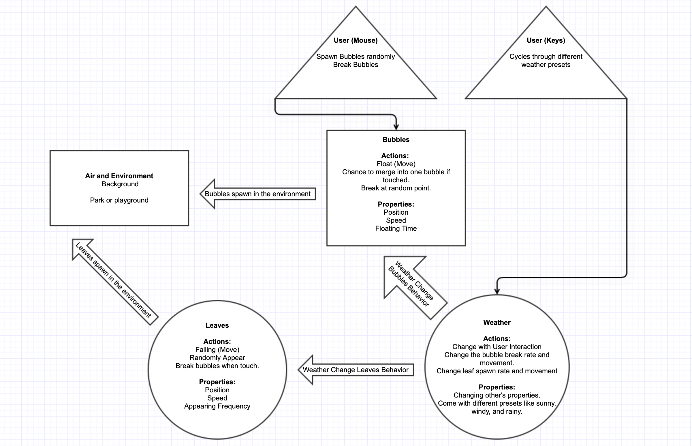
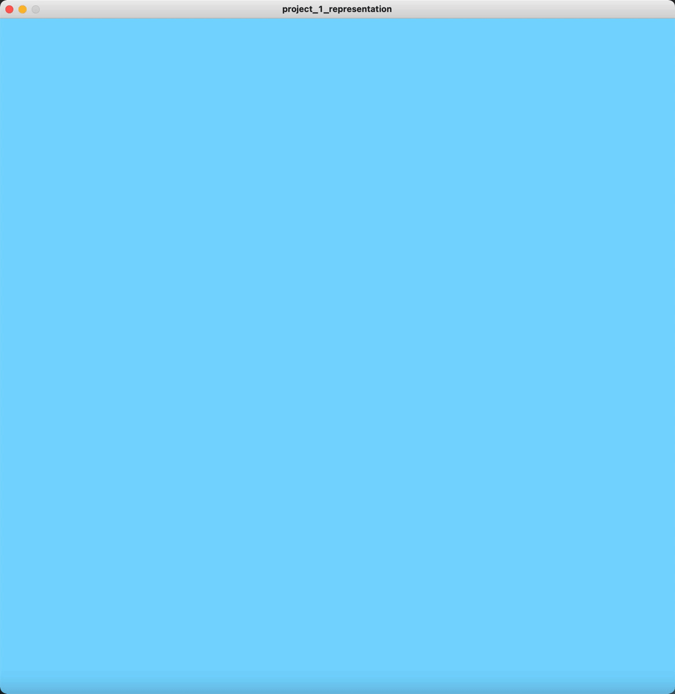

In this assignment, we have to visualize and recreate a natural system containing background, interactable elements, and user input. My prototype put the user into a natural environment where trees and wind exist. The user can blow bubbles into the environment and can control the weather in the environment. I considered this scenario because I was fascinated by one of the most classic Windows screensavers, the bubbles, and I want to recreate it with some more elements that users can interact with their mouse and keyboard.
The following image is the diagram that represents this natural system. By separating different elements into such form, I translated them into code more efficiently, especially for the moving elements: the leaves and the bubbles.
By utilizing the object-oriented programming techniques, I was able to add different attributes and actions to these elements and let them interact with the primary environment throw the draw() loop.
The most complicated code I have to deal with in this project is the collision system, especially between different bubbles. I have to use complicated nesting loops and two different array list to compare all the bubbles efficiently. There are also other complicated ideas I haven't implemented, including the graphics-intensive merging animation between bubbles. Besides these ideas, this project's future development should include a more precise collision system between leaves and bubbles, a more appealing GUI, and add more natural force system into more elements.